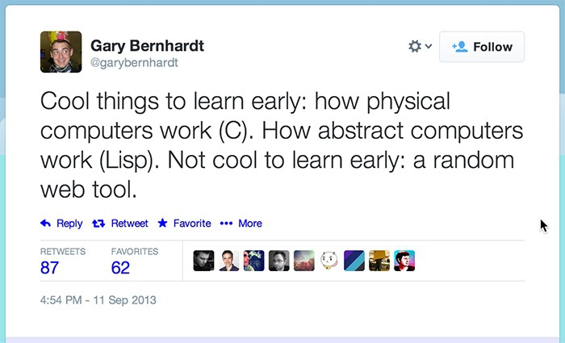

00. Link - Node by numbers 2017 edition
01. Link - Node.js development tips 2018
02. Link - Node module deep-dive: fs
03. Link - Meltdown and Spectre - Impact On Node.js
04. Link - The Brutal Lifecycle of JavaScript Frameworks
05. Link - Six Tiny But Awesome ES7 + ES8 Features
06. Link - Careful Now
07. Link - What Spectre and Meltdown Mean For WebKit
08. Link - Functional-Light JavaScript
09. Link - TC39 to Recommend 'Consistently Explicit Semicolon Use'?
10. Link - If You're Still Using Node 4, It's Seriously Time to Upgrade
